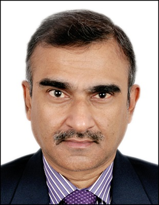

Proprietor – Deepak Kumar Sen, B.Com (Hons), ACA, AICWA.
Deepak Kumar Sen is a seasoned finance professional with more than 35 years’ experience coveringwide range of financial spectrum.
Area of specialization includes Ind AS/IndianGAAP , Internal Financial Control System, Cost Accounting ,Income Tax, GST, Business Process, FinTech, Risk Management & Corporate Governance. He has experience in setting up of new Companies/Jt Venture in India and abroad,Statutory Compliances procedures of Corporates, Banking Regulations & Treasury functions.
He is a Chartered Accountant and Cost and Management Accountant. Prior to setting up his practice as Chartered Accountant in Nov 20, he worked with reputed Indian and MNC companies as Head of Finance. His last stint was CFO of listed public limited manufacturing & service